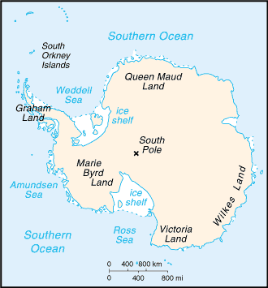
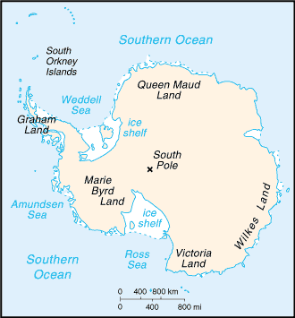

-
Introduction :: Antarctica
-
Background:Speculation over the existence of a "southern land" was not confirmed until the early 1820s when British and American commercial operators and British and Russian national expeditions began exploring the Antarctic Peninsula region and other areas south of the Antarctic Circle. Not until 1840 was it established that Antarctica was indeed a continent and not merely a group of islands or an area of ocean. Several exploration "firsts" were achieved in the early 20th century, but generally the area saw little human activity. Following World War II, however, the continent experienced an upsurge in scientific research. A number of countries have set up a range of year-round and seasonal stations, camps, and refuges to support scientific research in Antarctica. Seven have made territorial claims, but not all countries recognize these claims. In order to form a legal framework for the activities of nations on the continent, an Antarctic Treaty was negotiated that neither denies nor gives recognition to existing territorial claims; signed in 1959, it entered into force in 1961.
-
Geography :: Antarctica
-
Location:continent mostly south of the Antarctic CircleGeographic coordinates:90 00 S, 0 00 EMap references:Antarctic RegionArea:total: 14 million sq kmland: 14 million sq km (280,000 sq km ice-free, 13.72 million sq km ice-covered) (est.)
note: fifth-largest continent, following Asia, Africa, North America, and South America, but larger than Australia and the subcontinent of Europe
country comparison to the world: 2Area - comparative:slightly less than 1.5 times the size of the USLand boundaries:0note: see entry on Disputes - international
Coastline:17,968 kmMaritime claims:Australia, Chile, and Argentina claim Exclusive Economic Zone (EEZ) rights or similar over 200 nm extensions seaward from their continental claims, but like the claims themselves, these zones are not accepted by other countries; 22 of 29 Antarctic consultative nations have made no claims to Antarctic territory (although Russia and the US have reserved the right to do so) and do not recognize the claims of the other nations; also see the Disputes - international entryClimate:the coldest, windiest, and driest continent on Earth; severe low temperatures vary with latitude, elevation, and distance from the ocean; East Antarctica is colder than West Antarctica because of its higher elevation; Antarctic Peninsula has the most moderate climate; higher temperatures occur in January along the coast and average slightly below freezing; summers characterized by continuous daylight, while winters bring continous darkness; persistent high pressure over the interior brings dry, subsiding air that results in very little cloud coverTerrain:about 98% thick continental ice sheet and 2% barren rock, with average elevations between 2,000 and 4,000 m; mountain ranges up to nearly 5,000 m; ice-free coastal areas include parts of southern Victoria Land, Wilkes Land, the Antarctic Peninsula area, and parts of Ross Island on McMurdo Sound; glaciers form ice shelves along about half of the coastline, and floating ice shelves constitute 11% of the area of the continentElevation:mean elevation: 2,300 melevation extremes: -2,540 m lowest point: Bentley Subglacial Trench4892 highest point: Vinson Massifnote: the lowest known land point in Antarctica is hidden in the Bentley Subglacial Trench; at its surface is the deepest ice yet discovered and the world's lowest elevation not under seawater
Natural resources:iron ore, chromium, copper, gold, nickel, platinum and other minerals, and coal and hydrocarbons have been found in small noncommercial quantities; none presently exploited; krill, finfish, and crab have been taken by commercial fisheriesLand use:0% (2015 est.)Natural hazards:katabatic (gravity-driven) winds blow coastward from the high interior; frequent blizzards form near the foot of the plateau; cyclonic storms form over the ocean and move clockwise along the coast; volcanism on Deception Island and isolated areas of West Antarctica; other seismic activity rare and weak; large icebergs may calve from ice shelfEnvironment - current issues:the discovery of a large Antarctic ozone hole in the earth's stratosphere (the ozone layer) - first announced in 1985 - spurred the signing of the Montreal Protocol in 1987, an international agreement phasing out the use of ozone-depleting chemicals; the ozone layer prevents most harmful wavelengths of ultra-violet (UV) light from passing through the earth's atmosphere; ozone depletion has been shown to harm a variety of Antarctic marine plants and animals (plankton); in 2002, significant areas of ice shelves disintegrated in response to regional warming; in 2016, a gradual trend toward "healing" of the ozone hole was reportedGeography - note:the coldest, windiest, highest (on average), and driest continent; during summer, more solar radiation reaches the surface at the South Pole than is received at the Equator in an equivalent period
mostly uninhabitable, 98% of the land area is covered by the Antarctic ice sheet, the largest single mass of ice on earth covering an area of 14 million sq km (5.4 million sq mi) and containing 26.5 million cu km (6.4 million cu mi) of ice (this is almost 62% of all of the world's fresh water); if all this ice were converted to liquid water, one estimate is that it would be sufficient to raise the height of the world's oceans by 58 m (190 ft) -
People and Society :: Antarctica
-
Population:no indigenous inhabitants, but there are both permanent and summer-only staffed research stations
note: 53 countries have signed the 1959 Antarctic Treaty; 30 of those operate through their National Antarctic Program a number of seasonal-only (summer) and year-round research stations on the continent and its nearby islands south of 60 degrees south latitude (the region covered by the Antarctic Treaty); the population engaging in and supporting science or managing and protecting the Antarctic region varies from approximately 4,400 in summer to 1,100 in winter; in addition, approximately 1,000 personnel, including ship's crew and scientists doing onboard research, are present in the waters of the treaty region
peak summer (December-February) population - 4,490 total; Argentina 667, Australia 200, Australia and Romania jointly 13, Belgium 20, Brazil 40, Bulgaria 18, Chile 359, China 90, Czechia 20, Ecuador 26, Finland 20, France 125, France and Italy jointly 60, Germany 90, India 65, Italy 102, Japan 125, South Korea 70, NZ 85, Norway 44, Peru 28, Poland 40, Russia 429, South Africa 80, Spain 50, Sweden 20, Ukraine 24, UK 217, US 1,293, Uruguay 70 (2008-09)
winter (June-August) station population - 1,106 total; Argentina 176, Australia 62, Brazil 12, Chile 114, China 29, France 26, France and Italy jointly 13, Germany 9, India 25, Japan 40, South Korea 18, NZ 10, Norway 7, Poland 12, Russia 148, South Africa 10, Ukraine 12, UK 37, US 337, Uruguay 9 (2009); research stations operated within the Antarctic Treaty area (south of 60 degrees south latitude) by National Antarctic Programs
year-round stations - approximately 40 total; Argentina 6, Australia 3, Brazil 1, Chile 6, China 2, France 1, France and Italy jointly 1, Germany 1, India 1, Japan 1, South Korea 1, NZ 1, Norway 1, Poland 1, Russia 5, South Africa 1, Ukraine 1, UK 2, US 3, Uruguay 1 (2009)
a range of seasonal-only (summer) stations, camps, and refuges - Argentina, Australia, Belarus, Belgium, Bulgaria, Brazil, Chile, China, Czechia, Ecuador, Finland, France, Germany, India, Italy, Japan, South Korea, New Zealand, Norway, Peru, Poland, Russia, South Africa, Spain, Sweden, Ukraine, UK, US, and Uruguay (2008-09)
in addition, during the austral summer some nations have numerous occupied locations such as tent camps, summer-long temporary facilities, and mobile traverses in support of research (May 2009 est.) -
Government :: Antarctica
-
Country name:conventional long form: noneconventional short form: Antarcticaetymology: name derived from two Greek words meaning "opposite to the Arctic" or "opposite to the north"Government type:
Antarctic Treaty Summary - the Antarctic region is governed by a system known as the Antarctic Treaty System; the system includes: 1. the Antarctic Treaty, signed on 1 December 1959 and entered into force on 23 June 1961, which establishes the legal framework for the management of Antarctica, 2. Recommendations and Measures adopted at meetings of Antarctic Treaty countries, 3. The Convention for the Conservation of Antarctic Seals (1972), 4. The Convention for the Conservation of Antarctic Marine Living Resources (1980), and 5. The Protocol on Environmental Protection to the Antarctic Treaty (1991); the 40th Antarctic Treaty Consultative Meeting was held 22 May-1 June 2017 in Beijing, China; at these annual meetings, decisions are made by consensus (not by vote) of all consultative member nations; by January 2016, there were 53 treaty member nations: 29 consultative and 24 non-consultative; consultative (decision-making) members include the seven nations that claim portions of Antarctica as national territory (some claims overlap) and 46 non-claimant nations; the US and Russia have reserved the right to make claims; the US does not recognize the claims of others;
Antarctica is administered through meetings of the consultative member nations; decisions from these meetings are carried out by these member nations (with respect to their own nationals and operations) in accordance with their own national laws; the years in parentheses indicate when a consultative member-nation acceded to the Treaty and when it was accepted as a consultative member, while no date indicates the country was an original 1959 treaty signatory; claimant nations are - Argentina, Australia, Chile, France, NZ, Norway, and the UK; nonclaimant consultative nations are - Belgium, Brazil (1975/1983), Bulgaria (1978/1998), China (1983/1985), Czech Republic (1962/2017), Ecuador (1987/1990), Finland (1984/1989), Germany (1979/1981), India (1983/1983), Italy (1981/1987), Japan, South Korea (1986/1989), Netherlands (1967/1990), Peru (1981/1989), Poland (1961/1977), Russia, South Africa, Spain (1982/1988), Sweden (1984/1988), Ukraine (1992/2004), Uruguay (1980/1985), and the US; non-consultative members, with year of accession in parentheses, are - Austria (1987), Belarus (2006), Canada (1988), Colombia (1989), Cuba (1984), Denmark (1965), Estonia (2001), Greece (1987), Guatemala (1991), Hungary (1984), Iceland (2015), Kazakhstan (2015), North Korea (1987), Malaysia (2011), Monaco (2008), Mongolia (2015), Pakistan (2012), Papua New Guinea (1981), Portugal (2010), Romania (1971), Slovakia (1962/1993), Switzerland (1990), Turkey (1996), and Venezuela (1999); note - Czechoslovakia acceded to the Treaty in 1962 and separated into the Czech Republic and Slovakia in 1993;
Article 1 - area to be used for peaceful purposes only; military activity, such as weapons testing, is prohibited, but military personnel and equipment may be used for scientific research or any other peaceful purpose;Article 2 - freedom of scientific investigation and cooperation shall continue;Article 3 - free exchange of information and personnel, cooperation with the UN and other international agencies;Article 4 - does not recognize, dispute, or establish territorial claims and no new claims shall be asserted while the treaty is in force;Article 5 - prohibits nuclear explosions or disposal of radioactive wastes;Article 6 - includes under the treaty all land and ice shelves south of 60 degrees 00 minutes south and reserves high seas rights;
Article 7 - treaty-state observers have free access, including aerial observation, to any area and may inspect all stations, installations, and equipment; advance notice of all expeditions and of the introduction of military personnel must be given;Article 8 - allows for jurisdiction over observers and scientists by their own states;Article 9 - frequent consultative meetings take place among member nations;Article 10 - treaty states will discourage activities by any country in Antarctica that are contrary to the treaty;Article 11 - disputes to be settled peacefully by the parties concerned or, ultimately, by the ICJ;Articles 12, 13, 14 - deal with upholding, interpreting, and amending the treaty among involved nations;
other agreements - some 200 recommendations adopted at treaty consultative meetings and ratified by governments; a mineral resources agreement was signed in 1988 but remains unratified; the Protocol on Environmental Protection to the Antarctic Treaty was signed 4 October 1991 and entered into force 14 January 1998; this agreement provides for the protection of the Antarctic environment through six specific annexes: 1) environmental impact assessment, 2) conservation of Antarctic fauna and flora, 3) waste disposal and waste management, 4) prevention of marine pollution, 5) area protection and management and 6) liability arising from environmental emergencies; it prohibits all activities relating to mineral resources except scientific research; a permanent Antarctic Treaty Secretariat was established in 2004 in Buenos Aires, Argentina
Legal system:Antarctica is administered through annual meetings - known as Antarctic Treaty Consultative Meetings - which include consultative member nations, non-consultative member nations, observer organizations, and expert organizations; decisions from these meetings are carried out by these member nations (with respect to their own nationals and operations) in accordance with their own national laws; more generally, access to the Antarctic Treaty area, that is to all areas between 60 and 90 degrees south latitude, is subject to a number of relevant legal instruments and authorization procedures adopted by the states party to the Antarctic Treaty; note - US law, including certain criminal offenses by or against US nationals, such as murder, may apply extraterritorially; some US laws directly apply to Antarctica; for example, the Antarctic Conservation Act, 16 U.S.C. section 2401 et seq., provides civil and criminal penalties for the following activities unless authorized by regulation of statute: the taking of native mammals or birds; the introduction of nonindigenous plants and animals; entry into specially protected areas; the discharge or disposal of pollutants; and the importation into the US of certain items from Antarctica; violation of the Antarctic Conservation Act carries penalties of up to $10,000 in fines and one year in prison; the National Science Foundation and Department of Justice share enforcement responsibilities; Public Law 95-541, the US Antarctic Conservation Act of 1978, as amended in 1996, requires expeditions from the US to Antarctica to notify, in advance, the Office of Oceans, Room 5805, Department of State, Washington, DC 20520, which reports such plans to other nations as required by the Antarctic Treaty; for more information, contact Permit Office, Office of Polar Programs, National Science Foundation, Arlington, Virginia 22230; telephone: (703) 292-8030, or visit its website at www.nsf.gov -
Economy :: Antarctica
-
Economy - overview:
Scientific undertakings rather than commercial pursuits are the predominant human activity in Antarctica. Offshore fishing and tourism, both based abroad, account for Antarctica's limited economic activity.
Antarctic fisheries, targeting three main species – Chilean sea bass, mackerel, and krill– reported landing 295,000 metric tons in 2013-14. Unregulated fishing is an ongoing problem. The Convention on the Conservation of Antarctic Marine Living Resources determines the recommended catch limits for marine species.
A total of 36,702 tourists visited the Antarctic Treaty area in the 2014-15 Antarctic summer, slightly lower than the 37,405 visitors in 2013-14. These estimates were provided to the Antarctic Treaty by the International Association of Antarctica Tour Operators and do not include passengers on overflights. Nearly all of the tourists were passengers on commercial ships and several yachts that make trips during the summer.
-
Communications :: Antarctica
-
Telephone system:general assessment: local systems at some research stations (2015)domestic: commercial cellular networks operating in a small number of locations (2015)international: country code - none allocated; via satellite (including mobile Inmarsat and Iridium systems) to and from all research stations, ships, aircraft, and most field parties (2015)Internet country code:.aqInternet users:total: 4,400 (July 2016 est.)percent of population: 100% (July 2016 est.)country comparison to the world: 217
-
Transportation :: Antarctica
-
Airports:23 (2013)country comparison to the world: 133Airports - with unpaved runways:total: 23 (2013)over 3,047 m: 3 (2013)2,438 to 3,047 m: 5 (2013)1,524 to 2,437 m: 1 (2013)914 to 1,523 m: 8 (2013)under 914 m: 6 (2013)Heliports:53 (2012)
note: all year-round and seasonal stations operated by National Antarctic Programs stations have some kind of helicopter landing facilities, prepared (helipads) or unprepared
Ports and terminals:McMurdo Station; most coastal stations have sparse and intermittent offshore anchorages; a few stations have basic wharf facilitiesTransportation - note:US coastal stations include McMurdo (77 51 S, 166 40 E) and Palmer (64 43 S, 64 03 W); government use only except by permit (see Permit Office under "Legal System"); all ships at port are subject to inspection in accordance with Article 7, Antarctic Treaty; relevant legal instruments and authorization procedures adopted by the states parties to the Antarctic Treaty regulating access to the Antarctic Treaty area to all areas between 60 and 90 degrees of latitude south have to be complied with (see "Legal System"); The Hydrographic Commission on Antarctica (HCA), a commission of the International Hydrographic Organization (IHO), is responsible for hydrographic surveying and nautical charting matters in Antarctic Treaty area; it coordinates and facilitates provision of accurate and appropriate charts and other aids to navigation in support of safety of navigation in region; membership of HCA is open to any IHO Member State whose government has acceded to the Antarctic Treaty and which contributes resources or data to IHO Chart coverage of the area -
Military and Security :: Antarctica
-
Military - note:the Antarctic Treaty prohibits any measures of a military nature, such as the establishment of military bases and fortifications, the carrying out of military maneuvers, or the testing of any type of weapon; it permits the use of military personnel or equipment for scientific research or for any other peaceful purposes
-
Transnational Issues :: Antarctica
-
Disputes - international:the Antarctic Treaty freezes, and most states do not recognize, the land and maritime territorial claims made by Argentina, Australia, Chile, France, New Zealand, Norway, and the UK (some overlapping) for three-fourths of the continentthe US and Russia reserve the right to make claimsno formal claims have been made in the sector between 90 degrees west and 150 degrees westthe International Whaling Commission created a sanctuary around the entire continent to deter catches by countries claiming to conduct scientific whalingAustralia has established a similar preserve in the waters around its territorial claim